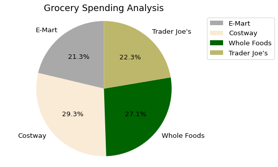

Total failure cases of factor "calculation": 1
| ID | Chart | Question | Additional Information | Pitfalls | Most relevant pitfall |
756.png |
 |
What is the average of the percentages for Trader Joe's and Costway?
|
{
"Ground Truth": "25.75%",
"Prediction": "To find the average of the percentages for Trader Joe's and Costway, follow these steps:\n\n1. Identify the percentage for Trader Joe's from the pie chart: 22.3%\n2. Identify the percentage for Costway from the pie chart: 29.3%\n3. Add these two percentages together: 22.3% + 29.3% = 51.6%\n4. Divide the sum by 2 to find the average: 51.6% / 2 = 25.8%\n\n<25.8>"
}
|
### Potential Pitfalls in the Chart Image: 1. **Incorrect Percentage Values in the Code:** The percentages shown on the chart do not match the data used in the code. The `sizes` values in the code are raw numbers (e.g., 4000, 5500) rather than percentages, which can lead to confusion when interpreting the chart. 2. **Labeling Issues:** The labels and corresponding colors may not be clearly linked, especially if the legend does not accurately reflect the segments. This could make it difficult to correctly associate each segment with its respective percentage. 3. **Rounding Errors:** The percentages displayed on the chart might be rounded, leading to small discrepancies between the visual representation and the precise numerical values. 4. **Misinterpretation of the Legend:** The legend's position or clarity might make it hard to determine which segment corresponds to which grocery store. ### Most Relevant Pitfall: The primary issue here is that the **percentages displayed on the chart do not correspond to the raw data used in the code**. The model likely relied on the percentages directly from the chart (22.3% for Trader Joe's and 29.3% for Costway) instead of calculating them based on the raw data provided in the code. This discrepancy caused the model to incorrectly compute the average as 25.8% instead of the expected 25.75%. <most_relevant>Incorrect Percentage Values in the Code</most_relevant> |
Incorrect Percentage Values in the Code |